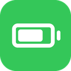

iOS Legacy
Tweaks for older iPads and iPhones on iOS 12, by itsAllexB.
Add this source
Open this page on your jailbroken device and tap your package manager:
Or add it by hand in Sources: https://itsallexb.github.io/ios-legacy/
Packages

BatteryPlus (iOS 12) 1.2.0
Low Power Mode, Automatic Low Power Mode, Battery Health and the percentage inside the battery icon for iOS 12 iPads.
FilesRoot (iOS 12) 1.0.2
Browse the whole filesystem in the Files app. Read-only by default.
SplitViewEnabler (iOS 12) 2.0.1
Split View and Slide Over on iPads that only had Slide Over.
Signing key
The index is signed with ios-legacy.asc (also ios-legacy.gpg), fingerprint FC194D0E4C4D77E50B3E153A724CCD61F96DE214.
Unofficial tweaks. Not affiliated with or endorsed by Apple. Source code on GitHub, GPL-3.0.